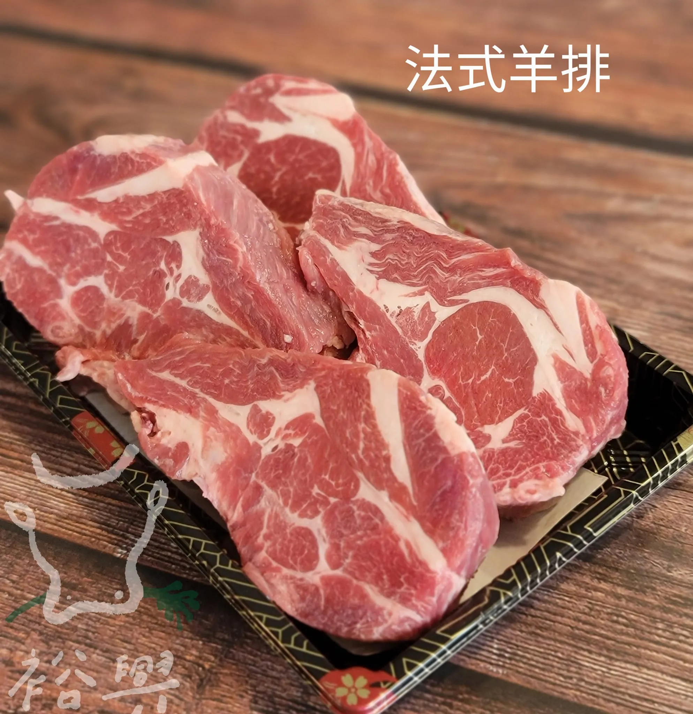

gps_fixed翼板牛魅力：一口感受自然與匠心極致
翼板牛，是來自牛肩胛部位的一塊稀有佳品，因其形狀如展翅的翼而得名。這部分肉質因為牛隻活動頻繁，筋膜分布均勻，結構特殊，因此既有豐富的油花，又保有扎實的肉感。入口即化的嫩度，搭配富有彈性的纖維口感，每一口都像在品味層層遞進的美味樂章。獨特滋味的來源：翼板牛的肉香濃郁，卻不油膩，因為肌間脂肪分布得天獨厚，能完美鎖住肉汁。無論是燒烤、煎烤還是炙燒，都能呈現出外焦內嫩的迷人風味。稍作調味，輕灑海鹽或搭配簡單的醬汁，就能讓它的本真滋味得到最佳展現。
為什麼選擇翼板牛？作為牛肉中的稀有部位，翼板牛產量有限，是饕客們心目中的隱藏寶藏。不僅適合在高檔餐桌上亮相，也是家庭聚餐的理想選擇。從第一口到最後一口，它都能帶來難以忘懷的滋味，成為舌尖上的幸福記憶。選擇翼板牛，選擇的不僅是一份肉，更是一場與味蕾對話的藝術享受。
gps_fixed骰子牛：一口滿足的極致美味
骰子牛，以其方正如骰子的形狀得名，是牛肉界的小而精緻的明星部位。每一顆骰子牛塊都經過精心切割，大小均勻，入口的瞬間滿溢濃郁肉香，彷彿將整片牛肉的精華濃縮在這小小的一口中。完美比例的口感層次：骰子牛通常選用油花分布均勻的部位，如肋眼或上肩肉，其脂肪與肌肉的完美結合，使每一口都能感受到外酥內嫩的極致體驗。
煎至微焦的表層如同鎖住滋味的金色鎧甲，輕輕咬下，肉汁四溢，鮮香瞬間充滿整個味蕾。適合多種料理方式：骰子牛不僅適合日式鐵板燒，更能輕鬆融入家庭料理，無論是中式快炒、韓式燒烤，還是經典的西式煎烤，都能帶來不同的口感。其小巧的形狀，也適合作為聚會美食，讓每位賓客都能品嘗到最精緻的牛肉風味。
為什麼選擇骰子牛？骰子牛的份量剛剛好，無需多加修飾，卻能帶來超越期待的美味。它不僅是一道料理，更是一份關於熱愛與分享的味覺記憶。一小顆骰子牛，就是一份濃縮的幸福。
gps_fixed五花牛(片):極致肥瘦交融的完美風味
五花牛，以其獨特的肥瘦交錯紋理而得名，是牛肉中的經典之選。它的肉質柔嫩多汁，油花分布均勻且細緻，宛如大理石般的紋路，在加熱後釋放濃郁的肉香，帶來層次豐富的口感體驗。肥瘦平衡的絕妙口感：五花牛最大的特色在於其肥瘦比例完美。脂肪部分柔滑細膩，入口即化，瘦肉部分則帶有適中的咬勁與肉香，兩者相輔相成，讓每一口都充滿驚喜。當脂肪在烹調過程中逐漸融化，滲入瘦肉中，滋味更加濃郁豐滿。多變的烹飪表現：無論是炙燒、燒烤、火鍋、還是鐵板煎烤，五花牛都能完美應對。燒烤時，微焦的油脂讓外層酥香誘人；火鍋中，迅速涮煮即可呈現嫩而多汁的口感。搭配簡單的調味或蘸料，即可引出五花牛本身的天然鮮味。
為什麼選擇五花牛？五花牛不僅僅是一道佳餚，更是一種享受生活的態度。它適合獨自品味，也能在聚會中分享，滿足各種挑剔的味蕾。一片五花牛，傳遞的不只是牛肉的美味，更是一份幸福的感動與溫暖。
gps_fixed雪花牛：肉品中的藝術品，舌尖上的奢華
雪花牛，以其獨特的大理石般油花紋理聞名，是牛肉中的頂級佳品。那細膩均勻的脂肪分布，宛如鋪展的雪花般美麗動人。當雪花牛在烹調時，脂肪在熱力下緩緩融化，將濃郁的肉香滲透至每一纖維，入口即化，帶來極致的味覺盛宴。頂級品質的口感享受：雪花牛的油花比例恰到好處，既不過於油膩，也不顯柴澀。細膩的脂肪與鮮嫩的瘦肉完美結合，每一口都是柔嫩滑順與鮮香濃郁的雙重享受。這種無與倫比的口感，讓雪花牛成為高端料理中的明星食材，是無數饕客心中的理想之選。多元料理方式的極致表現：雪花牛適合各種高端烹調方式，無論是日式燒肉、鐵板燒，還是西式煎烤，甚至涮鍋，雪花牛都能完美展現其肉質特性。簡單灑上鹽與胡椒，或搭配精緻的醬汁，即可引出其天然鮮美的真實風味。
為什麼選擇雪花牛？選擇雪花牛，不只是選擇了一道料理，更是一次舌尖與藝術的相遇。那柔嫩多汁的口感，與沁人心脾的濃郁肉香，帶來的不僅是味覺的滿足，更是一場關於奢華與品味的饗宴。
gps_fixed小羔羊：鮮嫩溫潤的自然饗宴
小羔羊，取自未滿一歲的幼羊，其肉質以細緻嫩滑、味道清香而廣受喜愛。相比成年羊肉，小羔羊的風味更加柔和，脂肪含量適中，鮮嫩多汁，入口毫無膻味，是肉品愛好者心中的絕佳選擇。自然純淨的細膩口感： 小羔羊肉的纖維細密、柔嫩，經過簡單烹調即可感受到入口即化的滑順與自然香氣。瘦肉部分細緻而不乾柴，脂肪則細膩滑順，兩者相互交融，帶來豐富的層次感。它的肉質鮮美，是追求健康與風味的完美平衡。多元烹飪方式，百搭的美味： 小羔羊肉可適用於多種料理風格，無論是中式的紅燒、火鍋涮煮，還是西式的燒烤與香料烤羊排，都能展現其鮮嫩多汁的特質。尤其是在燒烤或慢煮時，小羔羊脂肪在高溫下釋放香氣，與瘦肉相得益彰，呈現絕妙風味。
為什麼選擇小羔羊？選擇小羔羊，不僅是在品味大自然的純淨之作，更是一種健康而精緻的生活態度。每一口都傳遞著天然的鮮美與細膩的溫潤，無論是家庭餐桌還是節慶宴席，小羔羊都能為您的用餐時光增添無與倫比的幸福感。
gps_fixed小羊排：精緻與美味的代名詞
小羊排，是羊肉中的頂級部位，以其肉質鮮嫩、油花分布均勻而深受饕客喜愛。小羊排的每一根肋骨都包裹著適量的肉與脂肪，呈現自然的平衡，經過烹調後，外層微酥，內裡鮮嫩多汁，滋味層次豐富，令人難以抗拒。極致的口感體驗：小羊排的肉質細緻滑嫩，脂肪細膩而不膩口，帶著獨特的香氣，既有羊肉的濃郁，又不帶一絲膻味。咬下一口，嫩滑的肉汁在舌尖綻放，伴隨著烤制或煎制後的焦香，讓人回味無窮。多樣料理方式，百變風味： 小羊排特別適合多種料理手法。西式烤羊排，搭配迷迭香與蒜香的點綴，讓其肉香更加濃郁；中式紅燒或孜然烤羊排，風味馥郁而誘人；甚至簡單煎烤，也能將小羊排的鮮嫩極致展現。無論何種風格，都是舌尖上的奢華享受。
為什麼選擇小羊排？選擇小羊排，就是選擇了一份優雅與美味的結合。作為宴客的主角或一人獨享的精緻料理，它總能帶來舌尖的滿足與心靈的愉悅。那誘人的香氣與柔嫩的口感，每一口都是幸福的記憶。
